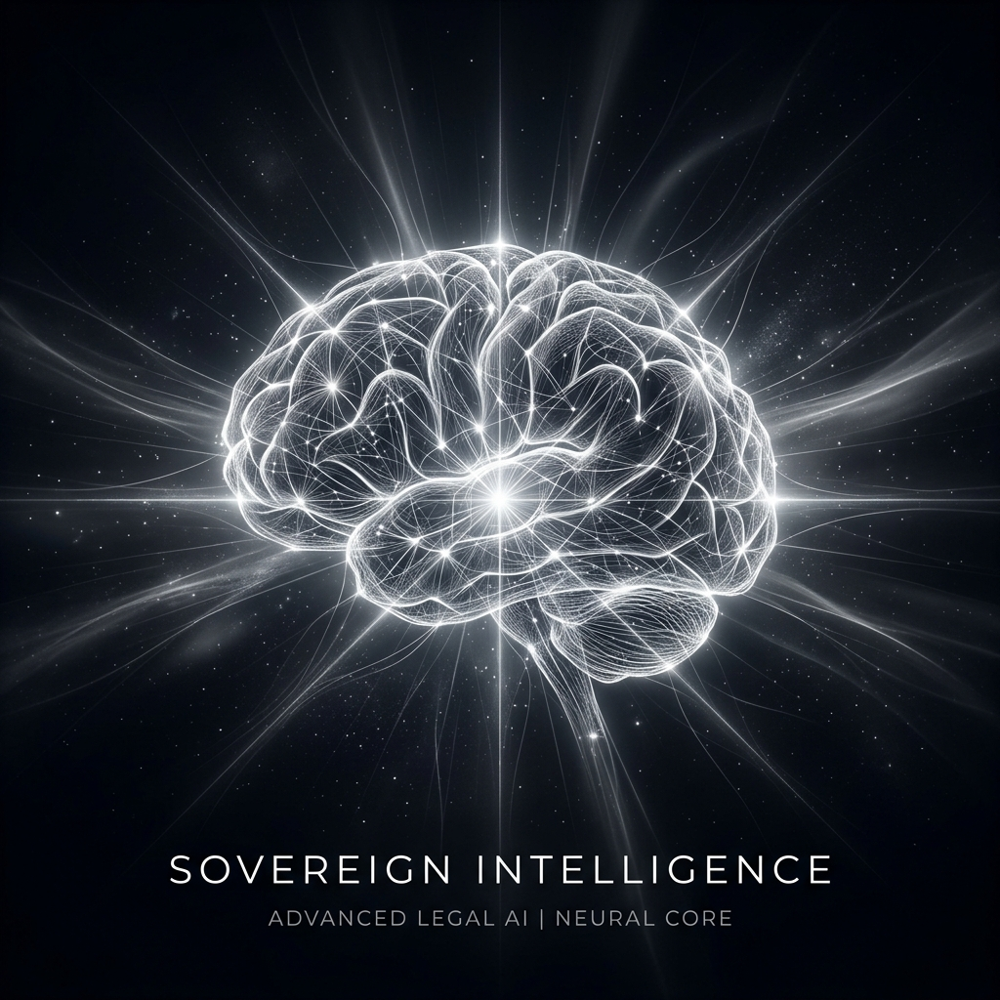

LexRAG
The Sovereign Intelligence Terminal.
Grounding legal precision in a high-performance architecture. Built for professionals in the UAE and India.
The Genesis of Precision.
LexRAG began as a high-performance RAG engine (v1)—a foundational core designed to parse and vectorize the complex nuances of Indian and UAE statutes. In v2, this intelligence was encased in a professional terminal interface, engineered for zero-latency analysis and institutional persistence.
India
- GST & Indirect Taxation
- Indian Kanoon Case Law
- CBDT Circulars & Rulings
UAE
- Corporate Tax Framework
- FTA Federal Decrees
- MOJ Statute Library
Built for the Strategists.
Legal Counsel
Rapid precedent discovery and statute cross-referencing with citation transparency.
Chartered Accountants
Instant clarity on tax treatment, free zone regulations, and compliance statutes.
Tax Consultants
Strategic advisory grounded in absolute legal truth, not probabilistic guesses.
Zero Hallucination. Absolute Grounding.
Unlike general-purpose models, LexRAG does not guess. It retrieves, reranks, and synthesizes official law documents using a hybrid neural architecture, ensuring every answer is backed by a primary source.
Ready for Sovereign Intelligence?
LexRAG is available for bespoke deployment. Elevate your legal operations today.
Connect with Evolucent AI